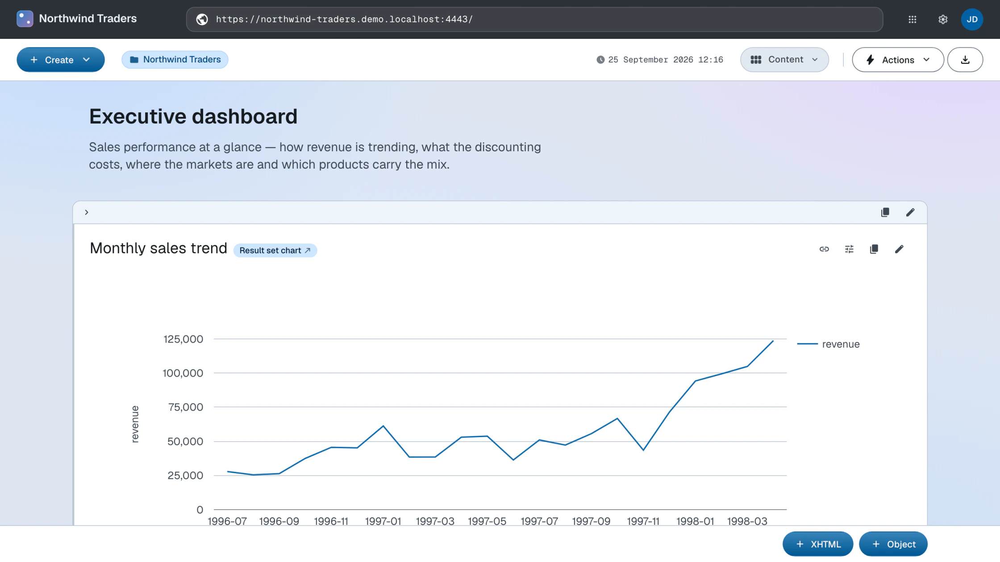

Composition
Assemble the landing page from content blocks
Everything the app can show is now in place — text, data, charts, views. The landing
page is their composition: an ordered sequence of
content blocks on the root document. Two block types exist: ldh:XHTML holds authored markup, and
ldh:Object embeds any other resource — a chart, a view, a document.
The demo's finished root document interleaves them into an executive dashboard:
<> a def:Root ;
dct:title "Northwind Traders" ;
rdf:_1 <#overview-intro> ; # XHTML — "Executive dashboard" intro
rdf:_2 <#sales-trend-block> ; # Object — monthly sales line chart
rdf:_3 <#margin-intro> ; # XHTML — "What the deals cost"
rdf:_4 <#discount-rate-block> ; # Object — discount rate line chart
rdf:_5 <#revenue-by-country-block> ; # Object — revenue by country bar chart
rdf:_6 <products/#top-selling-products> ; # Object — chart reused from Products
rdf:_7 <#top-manager-header> ; # XHTML — "Sales leadership"
rdf:_8 <#top-manager> ; # Object — embeds <employees/2/#this>
rdf:_9 <#navigation-prompt> ; # XHTML — where to go next
rdf:_10 <#select-children> . # Object — children view
Source: root.ttl · Live: the dashboard
Two of the blocks show how far transclusion reaches. rdf:_6 embeds a chart that is defined on the Products container — the same
resource renders on both pages, so an insight is authored once and placed wherever
it is needed. rdf:_8 embeds a plain data resource:
<employees/2/#this>, the Vice President of Sales, rendered with his description and photo — no special
profile widget exists; the
default rendering of the resource is the widget.
The narrative rhythm — prose, then evidence, then prose — is an editorial choice,
and it is made entirely in data: reordering the page means renumbering rdf:_N.
With the Content layout mode active, append blocks with the XHTML and Object buttons at the bottom of the page. Reorder by dragging a block by its drag handle and dropping it in a different position.
The composition is the root.ttl of the first stage, grown to its final form and applied with the same PUT:
ldh put "$LDH_BASE" root.ttl
To reorder, renumber the rdf:_N properties in the file and PUT it again — PUT replaces the document's description outright.
What you now see
The homepage is the finished dataspace: branded header, live charts over the imported graph, and navigation into the containers — all of it driven by one document's description.

How this works
- Content blocks — XHTML and object blocks, their RDF serialization and their management
Next: Publish